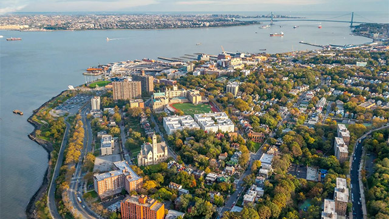

Staten Island
Staten Island is one of the five boroughs of New York City, in the U.S. state of New York, located in the southwest part of the city. Staten Island is separated from New Jersey by the Arthur Kill and the Kill Van Kull, and from the rest of New York by New York Bay. With a population of 468,730, Staten Island is the least populated of the boroughs but is the third-largest in area at 59 sq mi (153 km2).
The borough is coextensive with Richmond County, and until 1975 the borough was officially named the Borough of Richmond. Staten Island has been sometimes called "the forgotten borough" by inhabitants who feel neglected by the city government.
The North Shore — especially the neighborhoods of St. George, Tompkinsville, Clifton, and Stapleton — is the most urban part of the island; it contains the officially designated St. George Historic District and the St. Paul’s Avenue-Stapleton Heights Historic District, which feature large Victorian houses. The East Shore is home to the 2.5-mile (4 km) F.D.R. Boardwalk, the fourth-longest in the world. The South Shore developed rapidly beginning in the 1960s and 1970s, and is mostly suburban in character. The West Shore is the least populated and most industrial part of the island.
Staten Island used to claim the largest landfill in the world. It was closed in 2001, then shortly afterward temporarily reopened to receive the debris from the September 11th attacks. The landfill is being made into what will be New York City's second largest public park.
Motor traffic can reach the borough from Brooklyn via the Verrazano-Narrows Bridge and from New Jersey via the Outerbridge Crossing, Goethals Bridge, and Bayonne Bridge. Staten Island has Metropolitan Transportation Authority (MTA) bus lines and a MTA rapid transit line, the Staten Island Railway, which runs from the ferry terminal at St. George to Tottenville. Staten Island is the only borough that is not connected to the New York City subway system. The free Staten Island Ferry connects the borough to Manhattan and is a popular tourist attraction, providing views of the Statue of Liberty, Ellis Island, and Lower Manhattan.
As in much of North America, human habitation appeared in the island fairly rapidly after the retreat of the ice sheet. Archaeologists have recovered tool evidence of Clovis culture activity dating from approximately 14,000 years ago. This evidence was first discovered in 1917 in the Charleston section of the island. Various Clovis artifacts have been discovered since then, on property owned by the Mobil Oil Corporation.
The island was probably abandoned later, possibly because of the extirpation of large mammals on the island. Evidence of the first permanent American Indian settlements and agriculture are thought to date from about 5,000 years ago (Jackson, 1995), although early archaic habitation evidence has been found in multiple locations on the island (Ritchie 1963).
Rossville points; a distinct type of arrowhead which defines a Native American cultural period which spans the Archaic period to the Early Woodland period, dating from approximately 1500 to 100 BC., are named for the Rossville section of Staten Island where they were first recognized, having been found in the vicinity of the old Rossville Post Office building.
At the time of European contact the island was inhabited by the Raritan band of the Unami division of the Lenape. The Lenape who spoke Lenape one of the Algonquian languages called Staten Island Aquehonga Manacknong part of the Lenape homeland known as Lenapehoking. The Lenape were known to the Europeans as the "Delaware" because they inhabited both shores of the Delaware River.